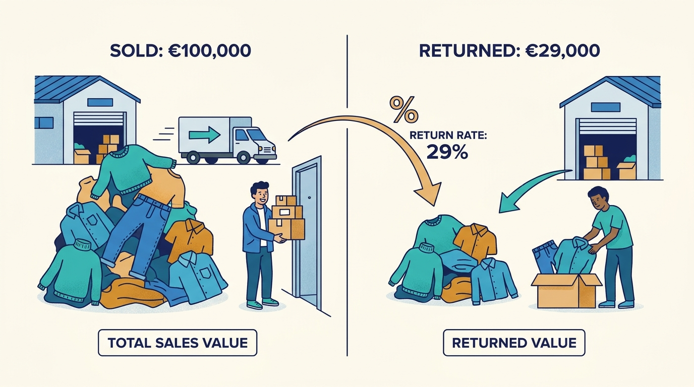
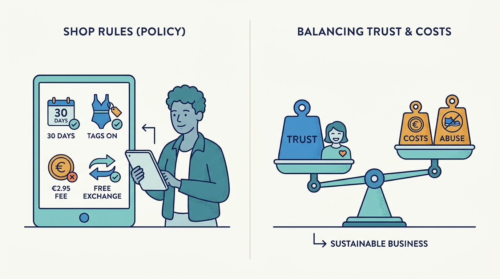
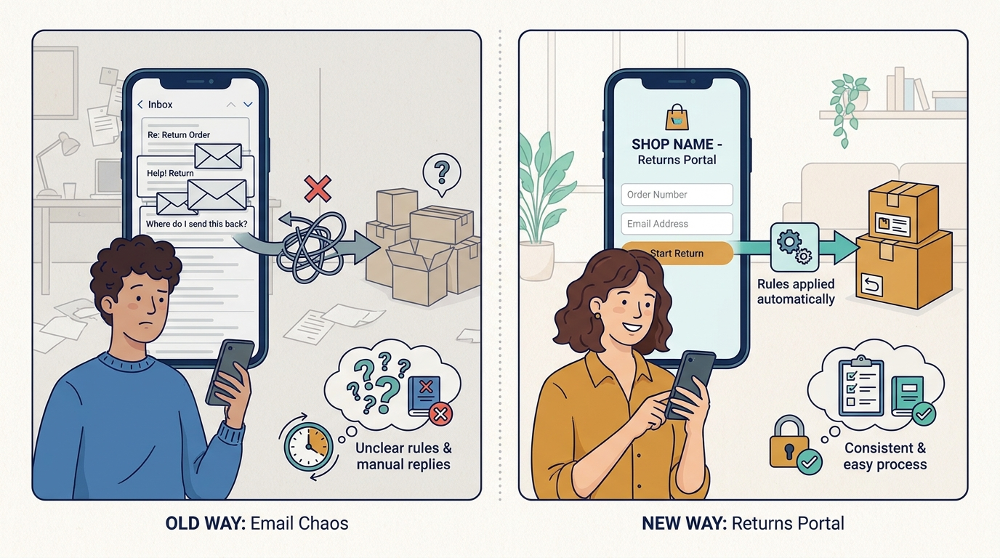
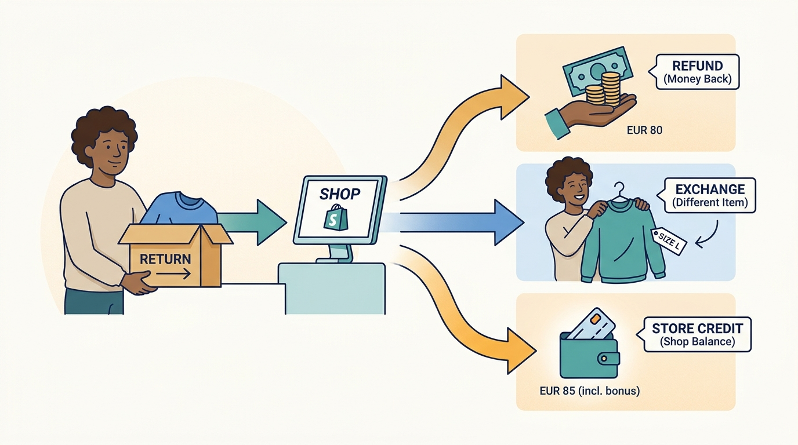
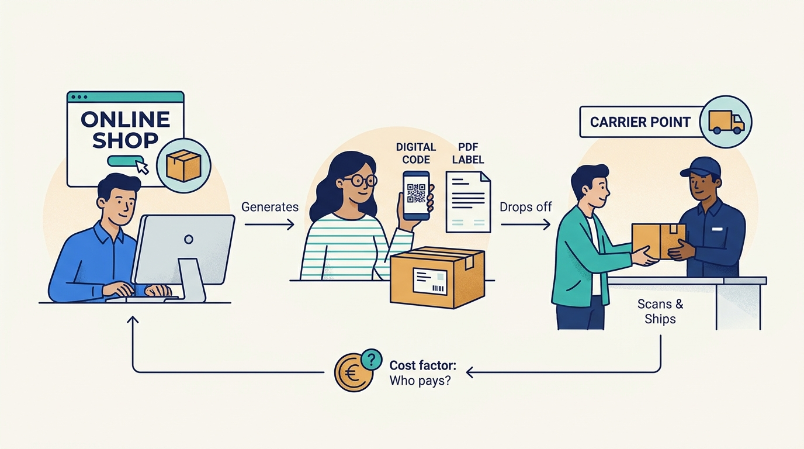
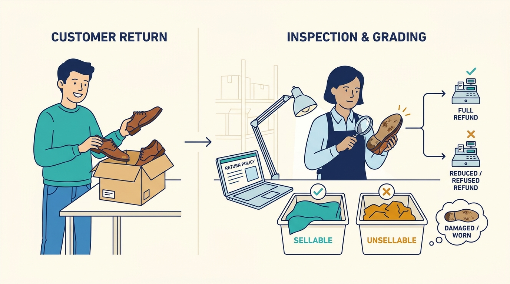
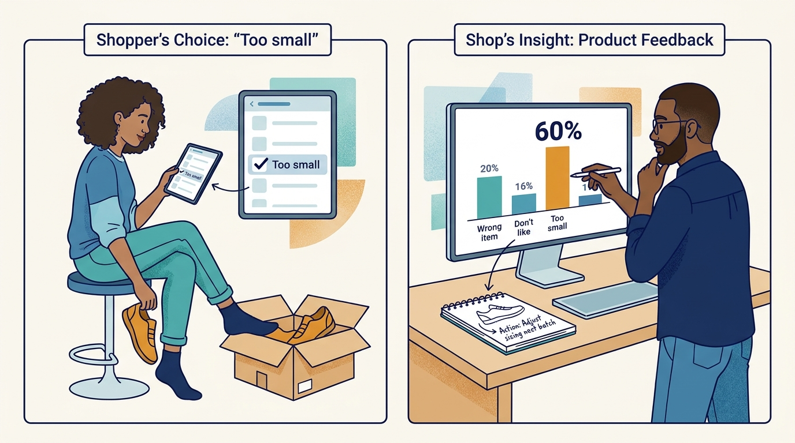

Shopper
Bought online and wants to return or swap an item.
What matters to them
Ease, speed of refund or replacement, and not paying fees.
A beginner's guide
Who this is for
A curious adult coming from a different field, with no assumed industry knowledge.
What this guide covers
How online shops in Europe handle the products customers send back, and what returns software does for them. Focus on fashion and lifestyle webshops in the Netherlands and neighbouring countries, which have high return rates. Payment law, consumer law details per country and reverse logistics for large goods are left out.
01
Explain why returns are a large cost for online shops and why they cannot simply be refused
Describe the path of a return from the shopper's request to the refund, exchange or store credit
Distinguish a refund, an exchange and store credit and why shops prefer the latter two
Name the main trade-offs in setting a return policy
Explain how return data can prevent future returns
02
Returns management is the work of handling products that online shoppers send back: letting them request a return, getting the parcel back, checking it, putting it back on sale and settling the money. Returns software organises this for the shop and gives the shopper a self-service web page to start a return.
In some categories a large share of what is sold online comes back. Returnista's 2026 benchmark reports about 29% for clothing, 28% for footwear and 37% for swimwear, versus 6% for home and living. Every return costs postage, labour and sometimes the item itself, and a refund removes revenue the shop had counted.
03
Bought online and wants to return or swap an item.
What matters to them
Ease, speed of refund or replacement, and not paying fees.
Sets the return policy and pays for returns software.
What matters to them
Margin after returns and keeping customers.
Answers questions about returns.
What matters to them
Fewer 'where is my refund' messages.
Receives, checks and restocks returned items, often for many shops.
What matters to them
Knowing what is coming and clear instructions.
Transports the return parcel and reports its status.
What matters to them
Correct labels and parcels at drop-off points.
Uses return data to improve products and size advice.
What matters to them
Knowing which items come back and why.
04
The share of items or sales value that customers send back.

It sets the scale of the problem and differs strongly by category.
Click the image to open it in a new tab.For example
If a shop sells EUR 100,000 of clothing in a month and EUR 29,000 comes back, the return rate by value is 29%.
Why it matters
It sets the scale of the problem and differs strongly by category.
The shop's rules: how long shoppers have, which items and reasons are allowed, whether a fee applies.

It balances shopper trust against cost and abuse.
Click the image to open it in a new tab.For example
30 days, no returns on swimwear without tags, EUR 2.95 fee unless exchanged.
Why it matters
It balances shopper trust against cost and abuse.
The web page where a shopper starts a return by entering order number and email.

It replaces emails and lets rules be applied consistently.
Click the image to open it in a new tab.For example
A link in the shipping email opens a page in the shop's own colours.
Why it matters
It replaces emails and lets rules be applied consistently.
The three outcomes: money back, a different item (often another size), or a balance to spend at the shop.

Exchanges and credit keep revenue in the shop; refunds do not.
Click the image to open it in a new tab.For example
Instead of EUR 80 back, the shopper takes the next size or EUR 85 credit including a bonus.
Why it matters
Exchanges and credit keep revenue in the shop; refunds do not.
The shipping label or code the carrier needs to bring the parcel back.

Who pays for it and which carrier is used are major costs.
Click the image to open it in a new tab.For example
A PDF label or a code shown at a parcel point.
Why it matters
Who pays for it and which carrier is used are major costs.
Checking the returned item's condition before deciding refund and resale.

Refunding before inspection risks paying for items that never come back or are damaged.
Click the image to open it in a new tab.For example
Shoes with worn soles are graded unsellable and the refund is reduced or refused per policy.
Why it matters
Refunding before inspection risks paying for items that never come back or are damaged.
The shopper's stated cause, chosen from a list.

Structured reasons turn returns into product feedback.
Click the image to open it in a new tab.For example
'Too small' chosen for 60% of returns of one shoe model.
Why it matters
Structured reasons turn returns into product feedback.
05
A few turning points, mainly in Northern European e-commerce; dates are approximate unless sourced.
Fashion webshops in Europe competed with free and long return windows; returns were handled by email and paper forms.
What this helps explain
Shoppers learned to order several sizes and return the rest, normalising high return rates.
Specialised returns platforms such as Returnista (founded 2017 in Amsterdam) offered self-service portals connected to shop platforms and carriers.
What this helps explain
Returns became a configurable process instead of inbox work.
Online shopping surged during COVID-19 lockdowns and returns volumes with it; Returnista reported growing from a handful of customers to over 1,000 companies.
What this helps explain
Returns cost became a board-level topic.
Focus shifted from processing returns to keeping revenue (exchanges, store credit), charging fees and preventing returns with data.
What this helps explain
Returns software now competes on revenue retention and insight, not just labels.
Consolidation: Returnless joined JTL-Software (January 2025) and Returnista joined the Dutch group Katapull (February 2026).
What this helps explain
Returns becomes one part of broader commerce software suites.
06
Sanne (invented) bought trainers in size 39 from a Dutch footwear webshop (invented) that uses a returns platform. They are too small. Figures are illustrative.
Sanne clicks the returns link in her shipping email, enters her order number and email, picks the trainers and the reason 'too small'.
Why this step matters
The structured reason is recorded for later analysis.
The portal checks stock and offers size 40 free of charge, or store credit with a small bonus, or a refund with a EUR 2.95 fee. Sanne takes the exchange.
Why this step matters
The shop keeps the sale.
Sanne gets a label instantly, chooses a carrier and drops the parcel at a nearby point. She receives emails when it is en route and delivered.
Why this step matters
Status emails prevent her from contacting customer service.
The shop's fulfilment partner scans the parcel, which it already expected, checks the shoes and assigns them a shelf location.
Why this step matters
The item is back on sale within days.
The merchandiser sees that this model is often returned as 'too small' and adds 'runs small, order a size up' to the product page.
Why this step matters
Future returns of this model fall.
The outcome
Sanne has the right shoes without contacting anyone; the shop kept the revenue, restocked the item and learned how to prevent the next return.
07
Merchants pay a monthly subscription (Returnista lists packs from EUR 179 per month) because exchanges, credit and fewer support contacts can outweigh the cost.
For example
A shop that turns some refunds into exchanges keeps that revenue.
The shopper uses the portal free, but may pay return fees set by the shop.
For example
Free exchanges but paid refunds steer shoppers to exchanges.
Strict policies reduce cost but can deter purchases; lenient policies win sales but invite abuse.
For example
Charging for returns may lower returns but also conversion.
08
Labels, exchanges and sometimes refunds are issued before the item is inspected.
The competing needs
Speed for honest shoppers versus protection against abuse.
In practice
Instant exchanges please shoppers but risk shipping a replacement for an item never returned.
How people respond, and its limits
Instant exchange for low-risk categories, approval with photos for high-risk ones.
Shop platform, carrier, warehouse, accounting and helpdesk all hold part of the return.
The competing needs
Broad integrations cost effort to maintain; few integrations mean manual work.
In practice
A warehouse that does not know a return is coming cannot match the parcel.
How people respond, and its limits
Native connectors to common systems plus an open API and webhooks.
Reasons are subjective and samples per product can be small.
The competing needs
Acting fast on early signals versus waiting for reliable numbers.
In practice
Three returns of a new item might be chance, not a sizing error.
How people respond, and its limits
Rank products by revenue impact and compare with category benchmarks.
09
A better way to understand it
Its main value today is in exchanges, rules, operations and insights.
A better way to understand it
A very strict policy can lower returns while also lowering sales.
A better way to understand it
Credit keeps the money in the shop and often leads to another purchase.
10
Returns are a structural cost of online fashion, not an exception.
Exchanges and store credit are how shops keep revenue.
Policies are trade-offs between trust, cost and abuse.
Returns touch many systems, so integrations matter.
Return reasons are product feedback that can prevent future returns.
11
Pause and think through each situation, then open the answer.
To encourage shoppers to keep money in the shop instead of taking a refund.
The reasoning
Credit is spent later at the shop, so revenue is retained.
Size 40 being out of stock.
The reasoning
Exchanges depend on live stock of the alternative.
So it can identify the parcel and act on it quickly.
The reasoning
Unannounced parcels need manual searching and delay refunds.
12
Which product categories drive most of your returns, and why?
Do you refund before or after inspection?
How do your returns reach your warehouse and accounting systems?
What happens to items that cannot be resold?
13
Category return rates and a framework for returns execution.
How exchange-first returns are presented by a vendor.